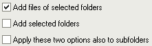

கோப்புகள் & கோப்புறைகளைச் சேர்த்தல்
பட்டியலில் கோப்புகளைச் சேர்க்க பல வழிகள் உள்ளன:
"கோப்புகளைச் சேர்" பொத்தான்
நீங்கள் சொடுக்கும் போது  "கோப்புகளைச் சேர்" பொத்தான் ஒரு நிலையான சாளரங்கள் கோப்பு தேர்வு
தோன்றும். இந்தச் சாளரம் கீழ்க்கண்டவற்றால் கட்டுப்படுத்தப்படுகிறது
சாளரங்கள், எனவே இது மற்ற நிரல்களைப் போலவே செயல்படுகிறது. தெரிந்து கொள்ள
வேண்டிய ஒரு தகவல் என்னவென்றால், இந்த சாளரத்தால் திரும்பும் கோப்புகளின்
வரிசை குறிப்பாக வரிசையில் இல்லை என்று நீங்கள் பார்க்கிறீர்கள். முதலில், சாளரங்கள் கவனம் செலுத்தும்
கோப்பை அனுப்புகிறது (அதாவது இது ஒரு சிறிய புள்ளியிடப்பட்ட எல்லையைக்
கொண்டுள்ளது, இது பொதுவாக நீங்கள் தேர்ந்தெடுத்த கடைசி கோப்பு). பின்னர்
அது அனுப்புகிறது அதைத் தொடர்ந்து வரும் அனைத்து கோப்புகளும். அது முடிவை அடையும்போது,
மீதமுள்ள கோப்புகளை அனுப்ப மேலே குதிக்கிறது.
"கோப்புகளைச் சேர்" பொத்தான் ஒரு நிலையான சாளரங்கள் கோப்பு தேர்வு
தோன்றும். இந்தச் சாளரம் கீழ்க்கண்டவற்றால் கட்டுப்படுத்தப்படுகிறது
சாளரங்கள், எனவே இது மற்ற நிரல்களைப் போலவே செயல்படுகிறது. தெரிந்து கொள்ள
வேண்டிய ஒரு தகவல் என்னவென்றால், இந்த சாளரத்தால் திரும்பும் கோப்புகளின்
வரிசை குறிப்பாக வரிசையில் இல்லை என்று நீங்கள் பார்க்கிறீர்கள். முதலில், சாளரங்கள் கவனம் செலுத்தும்
கோப்பை அனுப்புகிறது (அதாவது இது ஒரு சிறிய புள்ளியிடப்பட்ட எல்லையைக்
கொண்டுள்ளது, இது பொதுவாக நீங்கள் தேர்ந்தெடுத்த கடைசி கோப்பு). பின்னர்
அது அனுப்புகிறது அதைத் தொடர்ந்து வரும் அனைத்து கோப்புகளும். அது முடிவை அடையும்போது,
மீதமுள்ள கோப்புகளை அனுப்ப மேலே குதிக்கிறது.
ஆயிரக்கணக்கான கோப்புகளைச் சேர்க்க முயற்சிக்கும்போது சில வேக
சிக்கல்களும் இருக்கலாம். நிரலுக்கு கோப்பு பெயர்களை அனுப்ப சாளரம் ஒரு
நித்தியத்தை எடுக்கலாம். இந்த என்றால்
வழக்கு, "கோப்புறைகளைச் சேர்" அதற்கு பதிலாக
"கோப்புறைகளைச் சேர்" பொத்தான்
நீங்கள் சொடுக்கும் போது "கோப்புறைகளைச் சேர்" பொத்தான் ஒரு சாளரம் தோன்றும், ஒன்று அல்லது பல கோப்புறைகளைத் தேர்ந்தெடுக்க உங்களை அனுமதிக்கிறது.
இந்த சாளரம் பட்டியலில் கோப்புறைகளை சேர்க்க மட்டுமல்ல, அவற்றின் உள்ளடக்கத்தையும் சேர்க்க வடிவமைக்கப்பட்டுள்ளது.
சாளரத்தின் அடிப்பகுதியில் உள்ள சில விருப்பங்கள் பட்டியலில் என்ன சேர்க்கப்பட வேண்டும் என்பதைக் குறிப்பிட அனுமதிக்கின்றன:

தேர்ந்தெடுக்கப்பட்ட கோப்புறை (களில்) உள்ள கோப்புகள் சேர்க்கப்பட
வேண்டுமா இல்லையா என்பதை முதலாவது குறிப்பிடுகிறது. தேர்ந்தெடுக்கப்பட்ட
கோப்புறை (கள்) சேர்க்கப்பட வேண்டுமா என்பதை இரண்டாவது குறிப்பிடுகிறது
அல்லது இல்லை. தேர்ந்தெடுக்கப்பட்ட கோப்புறை (களின்) துணை கோப்புறைகளும்
சேர்க்கப்பட வேண்டுமா என்பதை மூன்றாவது குறிப்பிடுகிறது (இது அனைத்து துணை
நிலைகளுக்கும் பொருந்தும், முதல் மட்டுமல்ல).
தற்போது, இந்த சாளரம் பிணையம் உருப்படிகள் அல்லது அவற்றின் சொந்த
இயக்கி எழுத்து இல்லாத சிறப்பு சாதனங்களைக் காண்பிக்காது (இயக்கி அழுத்துடன் வரைபடமாக்கப்பட்ட பிணைய இயக்கிகள்
பட்டியலில் காட்டப்படும்). எதிர்காலத்தில் இது மேம்படுத்தப்படலாம்
(குறைந்தபட்சம் பிணைய உருப்படிகளுக்கு). அதுவரை, ஒரு "பிணையம்" பொத்தான்
ஒரு இருந்து ஒரு கோப்புறையை தேர்வு செய்ய அனுமதிக்கிறது
பிணையம் இயக்ககம். இவற்றைச் சேர்க்க, இந்த சாளரத்தை விட இழுத்தல் & சொட்டு எளிதாக இருக்கலாம்.
கோப்புகளை இழுத்து விடுங்கள்
சாளரங்கள் பிணையம்லிருந்து கோப்புகளை (மற்றும் அதனுடன் இணக்கமான பிற
நிரல், மொத்த தளபதி அல்லது ஊழியர் சாலமண்டர் போன்றவை) நேரடியாக இழுத்து
விடலாம் எறும்பு மறுபெயரின் முதன்மையான சாளரம். "கோப்புகளைச் சேர்" சாளரத்தில்
கோப்புகளைத் தேர்ந்தெடுப்பதை விட அவற்றைச் சேர்க்க இது பொதுவாக மிகவும்
எளிதான வழியாகும்.
இயல்பாக, நீங்கள் கோப்புகளை கைவிடும்போது ஒரு சாளரம் தோன்றும்.
கோப்புகளை எவ்வாறு சேர்க்க விரும்புகிறீர்கள் என்பதைத் தேர்வுசெய்ய இது
உங்களை அனுமதிக்கிறது. இந்த விருப்பங்கள் அவற்றை விட ஒரே மாதிரியானவை
"கோப்புறைகளைச் சேர்" சாளரத்தில்
கிடைக்கிறது. "மீண்டும் கேட்காதே" என்று பெயரிடப்பட்ட ஒரு விருப்பம்
எதிர்கால இழுத்தல் & சொட்டுக்கான தேர்ந்தெடுக்கப்பட்ட விருப்பங்களை
வைத்திருக்க அனுமதிக்கிறது,
எனவே சாளரம் மீண்டும் காட்டப்படாது. நீங்கள் இந்த விருப்பத்தை
சரிபார்த்து அதை நிராகரிக்க விரும்பினால் (அல்லது விருப்பங்களை மாற்றவும்),
நீங்கள் அதை "கோப்புகள் & கோப்புறைகள்" பக்கத்தில் செய்யலாம்
விருப்பங்கள் சாளரம்
இந்த சாளரத்தை அதன் இயல்பான நடத்தையை மாற்றாமல் ஒரு முறை மீண்டும் கொண்டு
வர, கோப்புகளை கைவிடும்போது விசையை அழுத்திப் பிடிக்கலாம். இது
அனுமதிக்கிறது, எடுத்துக்காட்டாக, பட்டியலில் ஒரு கோப்புறையைச் சேர்க்க, நீங்கள் தேர்ந்தெடுக்கும்
இயல்புநிலை நடத்தை கோப்புகளை மட்டுமே சேர்ப்பதாக இருக்கும்.
"கோப்புகளைச் சேர்" சாளரத்தை விட அதே வரம்புகள் பொருந்தும் (நிறைய கோப்புகளுடன் கோப்புகளின் வரிசை மற்றும் வேக சிக்கல்கள்).